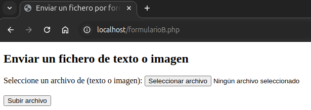
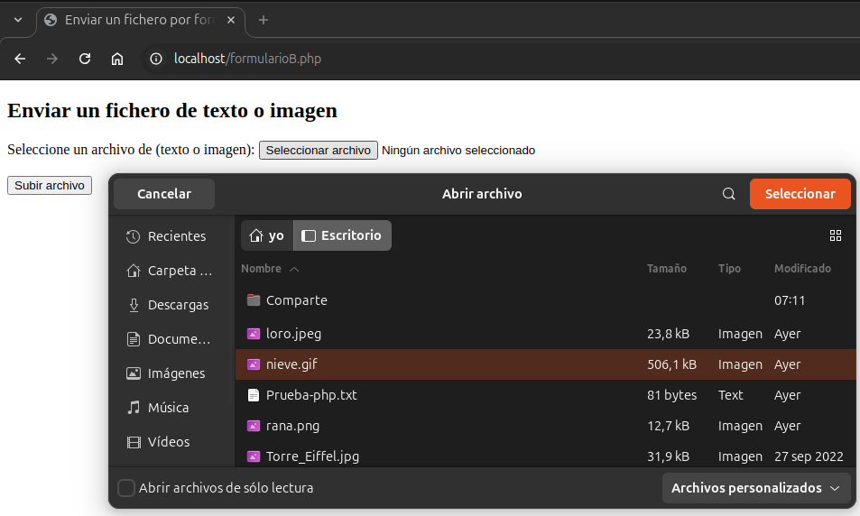

Documentación Formularios
Verificamos que tenemos instalado para la prueba Apache2 y php.
apache2 -v
php -v

Si no lo instalamos y habilitamos con:
sudo apt update
sudo apt install php libapache2-mod-php
sudo a2enmod php
sudo systemctl restart apache2
Creamos un fichero .conf para nuestro sitio de pruebas.
sudo nano /etc/apache2/sites-available/formularios.conf

Habilitamos y recargamos.
sudo a2ensite formularios.conf
sudo systemctl reload apache2.service
Copiamos el archivo .php (que contiene la parte .html y la parte .php) en /var/www/html.
** Puedes ver el fichero.php aquí
sudo cp formularioB.php /var/www/html
Le damos permisos:
sudo chown -R www-data:www-data formularioB.php
sudo chmod -R 644 formularioB.php
Creamos en "/var/www/html" un directorio "subidas" para que contenga los ficheros que vamos a subir.
El nombre del directorio corresponde con el que tenemos configurado en el fichero.php
sudo mkdir /var/www/html/subidas
Le damos permisos:
sudo chown -R www-data:www-data subidas
sudo chmod -R 755 subidas

Comprobamos.




Documentación Técnica: Formulario de Subida de Archivos
1. Descripción del Formulario
Este formulario permite a los usuarios cargar un archivo de texto o una imagen desde su dispositivo al servidor. Posteriormente, el archivo se guarda en un directorio específico, y su contenido se muestra en la página según el tipo de archivo.
2. Campos que se Pueden Ingresar
- Campo de Archivo:
- Etiqueta:
input type="file". - Atributo
name:fileToUpload. - Atributo
accept:.txt, image/*(solo archivos de texto-imagen JPG, PNG, GIF, etc.). - Es un campo obligatorio (
required).
3. Validaciones que se realizan
En el Cliente (HTML)
- Solo se permiten archivos de texto (
.txt) o imágenes (image/*). - El campo es obligatorio (
required).
En el Servidor (PHP)
- Tipo de Archivo:
- Se valida que el tipo de archivo esté en la lista permitida (
txt,jpg,jpeg,png,gif). - Si no cumple, se muestra un mensaje de error y no se sube el archivo.
- Integridad de la Subida:
- Se verifica si hubo errores al subir el archivo (
$_FILES["archivoAsubir"]["error"]). - Seguridad:
- Se utiliza
basename()yhtmlspecialchars()para prevenir ataques de tipo Path Traversal o Cross-Site Scripting (XSS).
4. Cómo se Envían los Datos
- Método de Envío:
POST. - Encabezado:
enctype="multipart/form-data"para permitir la transferencia de datos binarios (archivos).
5. Cómo se Procesan los Datos
- Recepción:
- El archivo subido se recibe en la variable global
$_FILES["archivoAsubir"]. - Definición de Rutas:
- Se define un directorio de destino (
subidas/) para almacenar los archivos subidos. - La ruta completa se forma concatenando el directorio de destino y el nombre del archivo (
basename()). - Validación del Tipo:
- El tipo de archivo se extrae usando
pathinfo()y se compara con una lista permitida. - Subida del Archivo:
- Si todas las validaciones son exitosas, el archivo se mueve al directorio especificado utilizando
move_uploaded_file().
6. Cómo se Muestra la Información en la Página
- Mensajes de Estado:
- Mensaje de éxito en verde si el archivo se subió correctamente.
- Mensaje de error en rojo si no se subió debido a restricciones de tipo o problemas durante el proceso.
- Contenido del Archivo:
- Si es un archivo de texto (
.txt), se lee su contenido confile_get_contents()y se muestra dentro de una etiqueta<pre>para conservar el formato. - Si es una imagen, se genera una etiqueta
<img>con la ruta del archivo subido como atributosrc.
7. Cómo se Guarda el Archivo
- El archivo subido se guarda en el directorio
subidas/. - Si el directorio no existe, es necesario crearlo antes de realizar la subida.
8. Cómo se Muestra el Contenido del Archivo
- Archivos de Texto:
- Se lee el contenido del archivo usando
file_get_contents(). - El contenido se escapa con
htmlspecialchars()para evitar inyecciones de código. - Imágenes:
- Se muestra una vista previa del archivo mediante una etiqueta
<img>con atributosmax-widthymax-heightpara limitar el tamaño.
9. Otra Información Relevante
- Seguridad:
- La ruta del archivo se asegura con
basename()para evitar rutas no deseadas. htmlspecialchars()se utiliza para evitar que el nombre del archivo contenga caracteres que puedan romper el HTML.- Restricciones:
- Actualmente, no se validan los tamaños de archivo ni se manejan conflictos por nombres de archivos existentes. Es recomendable implementar estas verificaciones si se necesita una solución más robusta.